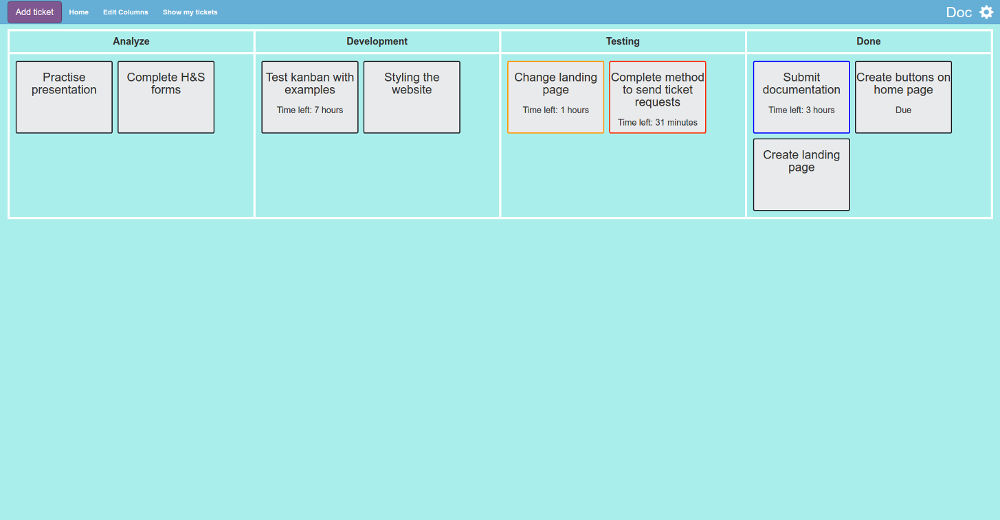

<div class="container-fluid">

  <div class="top-login-nav">
    <nav id="optionsbar" class="nav navbar-default navbar-fixed-top">


      <form class="navbar-form navbar-right">
        <label class="username-title" for="usr">Enter username</label>

        <input type="text" class="form-control username" placeholder="Username" id="usr" ng-model="username">
        <button type=submit class="btn btn-default" ng-click="login(username)">Login</button>
        <button type=submit class="btn btn-default" ng-click="newUser(username)">Sign Up</button>
      </form>


      <!-- //TODO: Make project title a drop down - with project options. -->
    </nav>
  </div>
</div>

<div class="below-nav">

  <div class="jumbotron">

    </div>

  <div class="kankan-description">
    <div class="row">
      <div class="col-sm-1"></div>
      <div class="col-sm-4">
        <h2>What is Kankan?</h2>
        <p>Kankan is a project management system based on the use of a kanban</p>
      </div>

      <div class="col-sm-2"></div>
      <div class="col-sm-4"></div>
      <div class="col-sm-1"></div>

    </div>
  </div>

</div>
